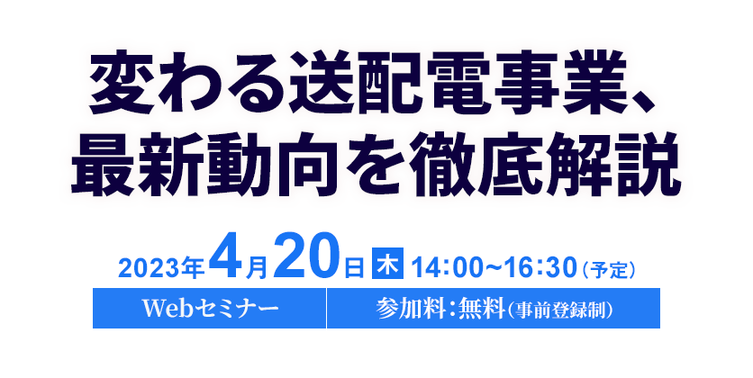

お申し込み受付を
終了しました
日本の送配電事業は大きな転換期を迎えています。脱炭素化や電力自由化を背景に、送配電事業を取り巻く環境が激変しているのです。
再生可能エネルギーの大量導入や老朽火力の退出、頻発する需給逼迫対応など、系統運用の難易度は高まるばかりです。一方、デマンドサイドに分散型電源が普及したことで、送電と配電で異なる潮流への対応が必要となりました。高経年設備の更新やレジリエンス強化、調達改革なども不可避です。しかもこれらを今年4月に始まる「レベニューキャップ制度」を意識し、効率的に進めなければなりません。課題はまさに山積みです。
そこで本セミナーでは、国内の送配電事業を取り巻く最新動向を解説するとともに、脱炭素化やレベニューキャップ制度で先行する海外事業者の事例を紹介します。送配電事業が抱える課題の本質を整理し、送配電事業の将来を探ります。ぜひご視聴ください。
開催概要
- 名称
- 変わる送配電事業、最新動向を徹底解説
- 日程
-
2023
年
4
月
20
日（木）
14：00～16：30（予定）
- 開催形式
- オンライン
- 主催
- 日経BP 総合研究所
- 共催
-
アーサー・ディ・リトル・ジャパン
- 協力
- 日経エネルギーNext、メガソーラービジネス
- 参加料
- 無料（事前登録制）
プログラム
※講演者や講演時間など、プログラムは変更になる場合がございます。予めご了承ください。
-
14：00 ~ 14：30
-
【基調講演】
再生可能エネルギー大量導入とレジリエンス確保を目指した地域マイクログリッドとその解析技術
環境エネルギー技術研究所
代表取締役
早稲田大学名誉教授横山 隆一 氏カーボンニュートラルの実現と多発する自然災害時においてもエネルギー供給を確保できる新たな社会インフラが求められており、地域マイクログリッドとその面的展開は、解決策のひとつとして期待されている。2050年には、電力需要の60％以上を再生可能エネルギーにて賄わなければならなと言われており、そのためには、再エネの大量導入を受け入れ可能な地域マイクログリッドを、各地域特性を活かして建設してゆくことが必要である。地域マイクログリッドは、再エネを有効活用し、平常時には商用系統と連系し系統安定運用に貢献し、緊急時（災害時）には、系統から解列させ、地域の重要負荷に自律的に電力供給が可能であり、防災拠点（レジリエンシー確保）となりうる。複数の地域マイクログリッドを連系したネットワーク型マイクログリッドは、さらに、ロバスト性を持ったものになる。ここでは、地域マイクログリッドの特徴と一般送配電事業者との協議において必要となる解析技術を解説する。
早稲田大学大学院理工学部博士課程修了。工学博士。三菱統合研究所を経て、ロンドン大学インペリアル工学医学校招聘教授、2007年より早稲田大学理工学術院大学院教授、現在、早稲田大学名誉教授、コンソーシアム地域自律型マイクログリッド研究会理事、環境エネルギー技術研究所代表取締。米国IEEE Life Fellow、日本電気学会Life Fellow。電力系統と市場分析、次世代エネルギー供給システムの計画・運用・制御及びシミュレーション解析ツールの提供、地域マイクログリッドの構築と面的展開、直流/交流ハイブリッド配電ネットワーク推進に従事。
-
14：35 ~ 15：05
-
レベニューキャップ制度における理想と現実を踏まえた取組み方針
アーサー・ディ・リトル・ジャパン
プリンシパル松尾 直紀 氏2023年4月よりレベニューキャップ制度が運用開始される。再エネへの対応必要性が増す一方で電力需要は減少するなど、事業環境の厳しさが増す中、経年設備の更新や災害に対するレジリエンス強化は今後も変わらず求められるところである。
不確実性が高い状況において、先行する海外事業者はどのようにこの制度に対応し、その結果送配電事業はどう変わったか。理想的な施策だけでなく、現実の結果を見ながらわが国のRC制度における対応事項について論じる。ENUT/Operation Strategy & Transformationプラクティスのコアメンバー。IT系、会計系コンサルティングファームを経て現職。中期経営計画、新規事業開発、組織変革、ケイパビリティ分析、業務プロセス設計、IT PMOなどを一貫して支援。AI、ブロックチェーン、RPA、IoTなどの様々なデジタル領域に関し、戦略策定からPoCまでの支援をリード。また、エネルギー、IT、通信といった、他産業との交点をコアとし、新たな事業変革を生み出していくような案件にも従事。エネルギー/IT/通信業界に深い知見を持つ。
-
15：05 ~ 15：35
-
送配電事業者としての新たな価値創造の戦略方向性
アーサー・ディ・リトル・ジャパン
プリンシパル宇野 暁紀 氏エネルギー産業が大きな変革期を迎える中、送配電事業者が直面する課題は多様化・複雑化している。政府は、送電領域では機能分化を前提とした広域化・高度化する送電PFを志向する一方、配電領域ではインフラデータを基盤とする新たな電力ビジネスや、他産業への拡がりを見据えた分散化・多層化する配電PFへの変革を志向している。これらの潮流や、先行する海外事業者の新規事業領域のトレンドも踏まえ、国内送配電事業者の取るべき戦略の方向性を論じる。
ENUT/Operation Strategy & Transformationプラクティスのコアメンバー。日系・外資系コンサルティングファームを経てADLに参画。全社中期経営計画策定、事業戦略策定、M&Aアドバイザリー、組織・業務改革、デジタルトランスフォーメーション(DX)戦略策定等、戦略立案から実行支援までを一貫して支援。近年は、エネルギー・建設・素材・商社などを中心に、産業全体の変革を見据えた戦略策定に従事している。
-
15：45 ~ 16：30
-
パネルディスカッション
変革期にある送配電事業、その先の成長を考える
環境エネルギー技術研究所横山 隆一 氏
アーサー・ディ・リトル・ジャパン松尾 直紀 氏
モデレーター
日経BP 日経エネルギーNext編集長山根 小雪
お申し込み
■視聴環境事前ご確認のお願い
- » オンラインセミナー視聴マニュアル（PDF）はこちら
- Webセミナー【ライブ配信】ご参加にあたり、「視聴環境チェックサイト」での動作確認をお願いしております。音声および動画が正常に受信できるかを、下記「視聴環境チェックサイト」へアクセスしていただきご確認ください。
なお、お客様がご使用のパソコンおよび通信環境によってはWebセミナー【ライブ配信】にご参加いただけない場合がございますので、あらかじめご了承ください。
▼視聴環境チェックサイト（PC・スマートフォン）
- https://ondemand.seminar.vcube.com/checker/videostream
- ※チェックサイトで視聴に問題がある場合は、まずセミナーの推奨環境に合っているかをご確認ください。
▼セミナー推奨環境(ビデオストリーミング配信の「受講者」の項目をご確認ください)
-
※受講者側で推奨しているPCブラウザ・OSは、以下となります。
Windowsプラウザ・・・Microsoft Edge、Mozilla Firefox、Google Chrome
Macブラウザ・・・safari
WindowsOS：Windows 11、Windows 10
MacOS：macOS 最新版
-
※受講者側で推奨しているスマートフォン・タブレットのブラウザ・OSは、以下となります。
iOS ・・・iOS デバイス iOS 10以上、Safari
Android・・・ Android 6以上、Google Chrome - ※インターネット環境によっては視聴が出来ない場合がありますので、視聴確認サイトから、受講される環境にてテストをお願いします。
スケジュール・内容は予告なしに変更する場合がございます。また、フリー・メール・アドレス、競合社の方はお断りする場合がございます。ご了承ください。
お問い合わせ
日経BP読者サービスセンターセミナー係
お問い合わせお申し込み受付を
終了しました